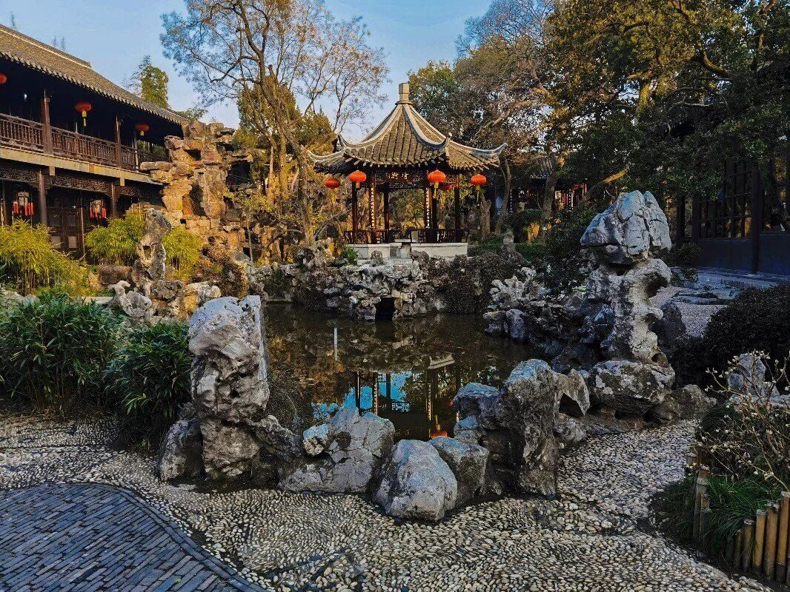

X · 第 10 期
行者无疆·赓续前行
第十期，行者第一次分头出发：江苏扬州、河南南阳、甘肃张掖，三省文脉在同一时间被分别记录。
第十期，行者第一次分头出发：江苏扬州、河南南阳、甘肃张掖，三省文脉在同一时间被分别记录。
湖光潋滟、青砖黛瓦、商客大道、塞上黄沙——四组意象拼出一张跨越三省的文化地图。
这一期以「赓续」为名，把团队前九期的方法论交到新一代行者手上。
「人生天地间，忽如远行客。」
《行者无疆 · 赓续前行》2022.03
调研焦点
- 01区域文化比较
- 02云上调研
- 03文脉赓续
行走路线
扬州瘦西湖 · 湖光潋滟→南阳商圣故里 · 文脉商道→张掖塞上江南 · 丹霞黄沙
SELECTED POSTS / 本期推文